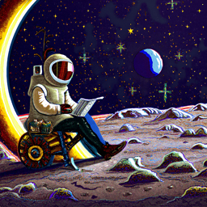

Prompt 1 – 50 denoising steps

Prompt 2 – 50 denoising steps
Prompt 3 – 50 denoising steps
Name: Mansoor Mamnoon
Random Seed: 180
Across all parts of this project, I used a fixed set of text prompts to explore different capabilities of diffusion-based image generation, including text-to-image synthesis, image-to-image translation, visual anagrams, and hybrid images. All prompts were embedded in advance and reused consistently throughout the experiments.
For the initial text-to-image experiments, I designed three creative prompts that combine multiple visual concepts and styles. These prompts were chosen to test the model’s ability to handle complex scenes, unusual object combinations, and detailed descriptive language.
In addition to the creative prompts above, I repeatedly used a small set of baseline prompts for unconditional or weakly conditioned generation. These prompts are listed explicitly because they appear throughout multiple sections of the project.
"")For image-to-image translation, I experimented with both unconditional and text-conditioned transformations. The unconditional projection experiments (Parts 1.7.0 and 1.7.1) use the generic photo prior. The final text-conditioned transformations in Part 1.7.3 use the following prompts:
For the visual anagram experiments, I generated three illusion pairs, where each image can be interpreted differently depending on the viewing direction. Each illusion is defined by a pair of prompts:
For hybrid image generation, I combined pairs of prompts by taking low-frequency components from one prompt and high-frequency components from another. The strongest hybrid pairs are listed below:
In total, this project uses 25 distinct prompts. This set is sufficient to justify precomputing prompt embeddings and demonstrates a range of creative, structural, and semantic challenges for diffusion-based models.
I used the DeepFloyd IF two-stage diffusion model through Hugging Face. Prompt embeddings
were generated in advance using the provided Hugging Face cluster and loaded locally from
prompt_embeds_dict.pth. For all experiments in this section, I fixed the random
seed to 180 to ensure reproducibility and isolate the effect of the diffusion
process itself.
I first generated baseline images using 20 denoising steps for all three prompts.
I then reran the same batch of prompts with 50 denoising steps, keeping the seed,
prompt embeddings, and pipeline configuration fixed. This allows a direct comparison of image
quality as a function of num_inference_steps.


Comparing images generated with 20 and 50 denoising steps shows that increasing
num_inference_steps improves image quality and, in some cases, changes how well the
image matches the prompt. Since the random seed and prompts are fixed, these differences come
from running the diffusion process for more steps.
For the mechanical peacock and the gingerbread cottage, the overall scene looks similar at both step counts, but the 50-step images are clearer. The peacock’s feathers and stained-glass patterns are sharper, and the city lights are cleaner. The gingerbread cottage has more defined icing and candy details at 50 steps, although the smoke still does not clearly form cinnamon-roll shapes.
The astronaut prompt shows a bigger change. With 20 steps, the image looks like a medieval or scholarly person reading in a library, with little visual evidence of space. With 50 steps, the person clearly appears in an astronaut suit, and the background looks like the moon. This shows that using more denoising steps can help the model better combine different ideas in a complex prompt.
Overall, more denoising steps usually make images sharper, and in harder prompts, they can also improve how well the image matches the text. This comes at the cost of more computation time.
In this section, I visualize the forward process of diffusion on a real image.
Starting from a clean 64×64 Campanile photo \(x_0\), I apply the forward noising equation
\(
x_t = \sqrt{\bar{\alpha}_t}\, x_0 + \sqrt{1 - \bar{\alpha}_t}\, \epsilon
\)
using the same \( \bar{\alpha}_t \) schedule as the DeepFloyd model. As the timestep
t increases, the contribution of the original image decreases and the contribution of
Gaussian noise increases.
I implement the forward diffusion step
\(x_t = \sqrt{\bar{\alpha}_t}\,x_0 + \sqrt{1 - \bar{\alpha}_t}\,\epsilon\)
in a helper routine forward(im, t). Given a clean image tensor \(x_0\) and an integer
timestep t, the routine:
alphas_cumprod.
The output is a tensor \(x_t\) with the same shape as the input image, representing the image after adding the
amount of noise prescribed by timestep t.


At t = 0, the image is completely clean: we see a sharp Campanile with clear edges and textures. At t = 250, there is noticeable grain, but the tower and background are still clearly recognizable. By t = 500, the structure is much harder to see: the noise dominates and only a faint outline of the tower remains. At t = 750, the image is nearly pure noise, and most semantic content has been destroyed. This matches the design of the diffusion forward process: as t increases, the signal \(\sqrt{\bar{\alpha}_t} x_0\) shrinks, and the noise term \(\sqrt{1 - \bar{\alpha}_t} \epsilon\) grows, providing a smooth path from a real image to pure Gaussian noise.
In this part, I tried to denoise the forward-diffused Campanile images from \(t = 250, 500, 750\) using a classical Gaussian blur filter. The idea is that averaging nearby pixels should reduce high-frequency noise. However, Gaussian blur does not know anything about the underlying image structure, so it inevitably removes edges and details along with the noise.


For t = 250, Gaussian blur slightly smooths the grain and makes the sky look cleaner, but it also softens the edges of the Campanile. At t = 500, the filter removes some high-frequency noise, yet the tower structure becomes very blurry and hard to see. By t = 750, almost all semantic content has already been destroyed by the forward process, and Gaussian blur can only smooth the noise into an even more featureless blob. This illustrates a key limitation of classical denoising: simple low-pass filters cannot reconstruct lost structure; they can only trade noise for sharpness.
In this part, I use the pretrained DeepFloyd Stage 1 UNet to perform one-step denoising on the noisy Campanile images from \(t = 250, 500, 750\). The UNet has been trained on a huge dataset of \((x_0, x_t, t)\) pairs to predict the Gaussian noise \(\epsilon\) that was added at each timestep. Given a noisy image \(x_t\), a timestep \(t\), and a text embedding (here I use the unconditional/null embedding), the model predicts \(\hat{\epsilon}\). Using the forward diffusion equation \[ x_t = \sqrt{\bar{\alpha}_t}\, x_0 + \sqrt{1 - \bar{\alpha}_t}\, \epsilon, \] I invert it to recover an estimate of the original image: \[ \hat{x}_0 = \frac{x_t - \sqrt{1 - \bar{\alpha}_t}\, \hat{\epsilon}}{\sqrt{\bar{\alpha}_t}}. \]


Compared to the Gaussian blur results in Part 1.2, the learned UNet denoiser produces much sharper and more faithful reconstructions. At \(t = 250\), the one-step denoised image is very close to the original Campanile, with clear edges and recognizable structure. At \(t = 500\), some details are still recovered, but fine textures and contrast begin to wash out. By \(t = 750\), the model struggles: the forward process has already destroyed most semantic information, so the reconstruction looks more like a generic “building-like” blob than the true Campanile.
This highlights a key advantage of diffusion models over classical filters: instead of blindly smoothing pixels, the UNet has learned a prior over natural images and uses both the noisy input and the timestep \(t\) to infer which structures are likely to be real signal and which are noise. However, it also shows a limitation of one-step denoising from very large \(t\): when the noise level is too high, the information about the original image is fundamentally ambiguous, and even a strong generative model cannot perfectly reconstruct it.
In this section, I implement iterative denoising with DeepFloyd IF. Instead of
attempting to recover the clean image x_0 in a single step, I begin from a very
noisy image at timestep t = 690 (from a strided schedule
[990, 960, ..., 0]) and repeatedly apply the DDPM update rule to move toward
progressively smaller timesteps until reaching t = 0.
At each step, the UNet predicts both the noise component and a learned variance term. I first
estimate x_0 from the current noisy image x_t, use this to construct
the DDPM mean for the next timestep x_{t'}, and then add the correct amount of
variance using the provided add_variance function. This produces a sequence of
images that gradually increase signal-to-noise ratio while remaining consistent with the
diffusion model’s training process.
To reverse the diffusion process, I repeatedly apply a DDPM-style update
from a noisy image \(x_t\) to a slightly less noisy image \(x_{t'}\).
The helper add_variance uses the scheduler’s learned variance
prediction to add the correct amount of noise at each step, and
iterative_denoise loops over all timesteps until reaching
\(t = 0\).
I implement this in two helper routines:
add_variance(predicted_variance, t, image) takes the UNet’s variance prediction for the current
timestep and asks the DDPM scheduler for the corresponding variance value. It then samples fresh Gaussian
noise with the same shape as the image, scales it according to the scheduler’s variance, and adds it to the
provided image. This matches the stochasticity used in DDPM sampling.
iterative_denoise(im_noisy, i_start, prompt_embeds, timesteps, display) performs the full reverse
process starting from a noisy image at timesteps[i_start] and repeatedly stepping to the next
smaller timestep until reaching t = 0. The loop runs without gradient tracking since sampling is
inference-only.
Inside the iterative denoising loop, each iteration follows the DDPM sampling structure:
t and the next timestep t' (the next element in the
strided schedule).
alphas_cumprod, and compute the corresponding per-step \(\alpha\) and \(\beta\) values that
relate these two timesteps.
prompt_embeds to predict (1) the noise estimate
for the current image and (2) a learned variance representation. The UNet output is split into these two
components.
add_variance with the UNet’s learned variance term
for timestep t. This produces the sampled \(x_{t'}\).
display is enabled, periodically print the step information and visualize the intermediate
image so the gradual denoising trajectory is observable.
The function returns the final denoised image at timestep t = 0 as a numpy array (still in the
model’s normalized range).
Below are snapshots of the Campanile after the forward diffusion process at several timesteps in my strided schedule. These correspond to intermediate states that the iterative denoiser must reverse:


Starting from very heavy noise (t = 690), the
one-step denoising estimate actually preserves the
structure of the Campanile surprisingly well: the tower shape and
the original top are still recognizable, even though the image is quite
noisy and low quality overall. This makes sense, because we only apply the
UNet once to directly invert the noisy sample x_t, without
repeatedly resampling new noise.
In contrast, the iterative denoising procedure produces a
much cleaner and sharper image, but it sometimes
hallucinates a different tower top than in the original
photograph. By the time we reach t = 690 in the forward
process, most of the original signal has been destroyed, so the model is
effectively “dreaming” a plausible tall tower rather than reconstructing
the exact Campanile. Repeatedly estimating \hat{x}_0,
resampling, and adding variance allows the sampler to move along the
diffusion model’s natural image manifold, which improves realism but can
drift away from the exact ground-truth details.
Finally, the Gaussian blur baseline is smooth but fundamentally limited: it only removes high-frequency noise and cannot recover missing structure. Compared to it, diffusion-based denoising (both one-step and iterative) is able to restore meaningful geometry and texture, highlighting the advantage of learning a generative model of natural images rather than relying on purely classical filtering.
In this section, I use my iterative_denoise function not to clean up an existing
image, but to generate images from pure noise. Following the assignment,
I sample an initial tensor
\(x_T \sim \mathcal{N}(0, I)\) of shape \(1 \times 3 \times 64 \times 64\) and then run the
denoising loop from the noisiest timestep down to \(t = 0\) using the same
strided_timesteps schedule as in Part 1.4.
The denoiser is conditioned on the text prompt embedding for
"a high quality photo". At each timestep \(t\), the UNet predicts the noise in the
current image, which I combine with the diffusion coefficients
\(\bar{\alpha}_t\) to form an estimate of the clean image \(x_0\). I then use the DDPM update
rule with learned variance to step from \(x_t\) to a slightly less noisy image \(x_{t'}\),
and repeat until I reach a final sample at \(t = 0\).


All five images start from independent Gaussian noise but share the same text prompt
"a high quality photo". Even without classifier-free guidance, the model produces
reasonably realistic, photo-like outputs: we see natural textures, lighting, and depth,
rather than pure noise. However, the samples are still somewhat soft or painterly and can
contain artifacts and odd details. This matches the expectation from the assignment:
the iterative denoising procedure steers noise towards the natural image manifold, but
without stronger guidance (which I add later with CFG), the images are only loosely
constrained by the prompt.
In Part 1.5, I sampled images by denoising pure Gaussian noise using my iterative diffusion sampler. The results looked vaguely photographic, but many images were blurry or lacked clear structure. In this section I use Classifier-Free Guidance (CFG) to improve sample quality.
At each denoising step, the UNet predicts two noise estimates:
a conditional noise estimate \(\epsilon_c\) given the text prompt
"a high quality photo", and an unconditional noise
estimate \(\epsilon_u\) given the empty prompt "".
CFG combines them as:
\[ \epsilon = \epsilon_u + \gamma \, (\epsilon_c - \epsilon_u), \]
where \(\gamma\) is the guidance scale. I use \(\gamma = 7\). When \(\gamma = 0\), the model ignores the text and behaves unconditionally; when \(\gamma = 1\), it uses the normal conditional prediction; and when \(\gamma > 1\), it exaggerates the difference between conditional and unconditional noise, which tends to produce sharper, more on-prompt images at the cost of diversity.
For Classifier-Free Guidance (CFG), I run the UNet twice at each timestep:
once with the conditional prompt embedding for
"a high quality photo", and once with the unconditional embedding
for the empty prompt. I then combine these two noise predictions using
\(\epsilon = \epsilon_u + \gamma (\epsilon_c - \epsilon_u)\) with guidance
scale \(\gamma = 7\), and use the resulting guided noise in the same
DDPM-style update rule as in Part 1.4.
Before sampling, I precompute and store the text embeddings for both the
conditional prompt ("a high quality photo") and the
unconditional empty prompt. These embeddings are reused at every timestep
to avoid recomputing text encodings inside the denoising loop.
The iterative CFG denoising procedure operates as follows:
t and the next
smaller timestep t'.
The loop continues until reaching t = 0, at which point the final
output is a denoised image sample in the model’s normalized range.


All samples use the same random seed setup as earlier parts and are generated
by starting from pure Gaussian noise and running the
classifier-free guided iterative denoising procedure with the prompt
"a high quality photo" and guidance scale \(\gamma = 7\).
Compared to the unguided samples in Part 1.5, these images are noticeably
more photorealistic: they look like well-lit portraits with
sharper edges, clearer facial features, and more consistent lighting and
background structure. At the same time, the samples are less diverse: most
images collapse toward a similar “high-quality portrait” style, which
illustrates the usual tradeoff of CFG – higher fidelity but reduced variety.
In this part I reuse my iterative denoising sampler, but instead of starting from pure noise
I start from a noised real image. I first apply the forward diffusion process to the
original 64×64 Campanile image to obtain \(x_t\) at various timesteps, and then run
iterative_denoise_cfg from that point down to \(t = 0\) using the prompt
"a high quality photo". This is essentially the SDEdit algorithm: it projects
a noisy image back onto the natural image manifold, with the amount of change controlled by
how much noise I add.


For very small noise (i_start = 1, 3), the edits are subtle: the sky and trees shift slightly but the tower is almost unchanged. As I start from larger noise levels (i_start = 10, 20), the model has to hallucinate much more content, so the campanile’s top and background can change substantially while still staying “photo-like”.
I also applied the same procedure to two web images: a coastal town with white houses and red
roofs, and a beach scene with a hat and sandals. In each case I ran SDEdit from noise levels
[1, 3, 5, 7, 10, 20] with the generic prompt "a high quality photo".


SDEdit is especially fun when I start from non-realistic inputs such as clipart and my own sketches. Below I show one web image (a vector-style cat) and two hand-drawn images that I drew in the Colab canvas, each projected to the natural image manifold at increasing noise levels.


For inpainting, I modify my CFG denoising loop so that at every timestep I overwrite the unmasked region with a noised version of the original image \(x_{\text{orig}}\) at the same timestep. If \(m\) is a binary mask where 1 indicates the editable region, the update is
\(x_t \leftarrow m \odot x_t + (1 - m)\odot \text{forward}(x_{\text{orig}}, t).\)
This keeps everything outside the mask consistent with the original photo, while the diffusion model freely resynthesizes content inside the mask.
The inpainting procedure reuses the classifier-free guided iterative denoising loop from the previous section, with one crucial modification: at every diffusion step, pixels outside the mask are forced to match the original image corrupted to the same noise level. This ensures that only the masked region is edited, while the rest of the image remains faithful to the original input.
The inpainting routine operates as follows:
The final output is an inpainted image where pixels outside the mask are preserved from the original photo, and pixels inside the mask are newly synthesized in a way that is coherent with both the surrounding context and the text prompt.


The model fills the top of the tower with a plausible structure that matches the lighting and perspective of the original image, even though that region was completely resampled.
Here I show three more masks on two different images. Each triplet shows the original image, the binary mask, and the final inpainted result.


In this section, I use SDEdit with Classifier-Free Guidance to transform real images
toward imaginative text prompts. Each transformation begins by adding noise at a given level
(i_start ∈ {1,3,5,7,10,20}) and then denoising using a text prompt.
Lower noise levels preserve the original structure, while higher noise levels result
in stronger transformations.
Prompt: a futuristic rocket launch tower standing on an alien planet with purple sky


Prompt: a snowy mountain landscape with penguins sliding down icy hills


Prompt: a medieval village built entirely out of enormous glowing mushrooms


In this part I implement visual anagrams: single images that look like one subject when upright but reveal a different subject when flipped upside down. At each denoising step I compute two guided noise estimates:
\(\epsilon_1 = \text{CFG}(\text{UNet}(x_t, t, p_1))\)
\(\epsilon_2 = \text{flip}\big(\text{CFG}(\text{UNet}(\text{flip}(x_t), t, p_2))\big)\)
where \(p_1\) and \(p_2\) are two different prompts, and flip is a vertical flip.
I then average them:
\(\epsilon = (\epsilon_1 + \epsilon_2) / 2\),
and use \(\epsilon\) in the DDPM update. The same underlying latents are constrained to be compatible with both prompts, but in opposite orientations.
The visual anagram sampler is a modified classifier-free guided denoising loop that enforces two different semantic interpretations on the same latent image. Instead of producing a single guided noise estimate at each timestep, the sampler computes two guided predictions corresponding to two prompts and two orientations of the image.
The procedure works as follows:
The final output is a single image whose latent representation has been shaped so that it aligns with prompt \(p_1\) when viewed upright and with prompt \(p_2\) when viewed upside down.


Upright, the image reads as a portrait of an older man with strong facial shadows. When flipped, those same shadow structures reorganize into a ring of figures surrounding a bright central glow, resembling a campfire scene.


In this illusion, fine details such as fur texture and whiskers in the upright cat transform into vine-like strands and hollow eye sockets when flipped, forming the skull structure.


Here the silhouette of the castle and surrounding clouds doubles as the jawline, horns, and facial contours of a dragon when viewed upside down. In all three cases, the shared latent image must satisfy two different prompts simultaneously, which is made possible by the dual-path, CFG-based denoising process.
Finally, I implement hybrid images using Factorized Diffusion. At each timestep I compute two guided noise predictions:
\(\epsilon_1 = \text{CFG}(\text{UNet}(x_t, t, p_1)),\quad \epsilon_2 = \text{CFG}(\text{UNet}(x_t, t, p_2))\).
I then take low frequencies from \(\epsilon_1\) and high frequencies from \(\epsilon_2\):
\(\epsilon = f_{\text{lowpass}}(\epsilon_1) + f_{\text{highpass}}(\epsilon_2),\)
where f_lowpass is implemented with a Gaussian blur (kernel size 33, σ = 2) and
f_highpass(x) = x - f_lowpass(x). This composite noise drives the denoising
process so that the final image looks like prompt \(p_1\) when blurred or viewed from far away,
but like prompt \(p_2\) when viewed up close.
The hybrid image sampler extends classifier-free guided diffusion by factorizing the noise prediction into low- and high-frequency components coming from two different text prompts. Instead of committing to a single semantic interpretation at all spatial scales, the sampler allows one prompt to control global structure while another controls fine details.
The procedure operates as follows:
The final output is a hybrid image whose global appearance is dominated by prompt \(p_1\), while its fine-scale edges and textures are dominated by prompt \(p_2\).
Below are all of the hybrid images I generated using the factorized diffusion sampler. In each case, the low frequencies come from a “soft” or blurry prompt (background / global structure), while the high frequencies come from a detailed, high-contrast prompt (edges and fine details).


At low spatial frequencies the image is dominated by smooth glowing nebula blobs, so it looks like a colorful galaxy. At high spatial frequencies, the pencil-like lines that form the owl’s eyes and feathers become visible. The hybrid effectively hides a sketch inside a soft astronomical background.
Overall, visual anagrams and hybrid images highlight how flexible the diffusion framework is: by manipulating the noise estimates at each step (e.g., flipping, frequency splitting), I can steer the model to satisfy multiple competing constraints at different spatial scales or orientations.
In this part, I trained an unconditional UNet to act as a denoiser on MNIST. The denoising objective is mean-squared error: \[ \mathcal{L} = \mathbb{E}_{x,\epsilon}\left[\lVert D_\theta(z) - x \rVert_2^2\right], \quad z = x + \sigma \epsilon,\ \epsilon \sim \mathcal{N}(0, I). \] During training, I sample fresh noise every time a batch is fetched so the network sees new noisy inputs each epoch.
I first verified the corruption process by taking a fixed MNIST digit and adding Gaussian noise at multiple noise levels \(\sigma \in \{0.0, 0.2, 0.4, 0.5, 0.6, 0.8, 1.0\}\). As \(\sigma\) increases, the digit becomes progressively harder to recognize.

Observation: As the noise level increases, the image transitions smoothly from a clean, easily recognizable digit to near-pure Gaussian noise. At small \(\sigma\), the digit structure is largely preserved with only mild pixel-level corruption. As \(\sigma\) grows, fine details are progressively destroyed, and by \(\sigma = 1.0\) the input contains almost no visible information about the underlying digit. This visualization confirms that the corruption process behaves as expected and produces a continuous spectrum of difficulty for the denoising task.
Deliverable: Visualization of the noising process (above).
I trained the UNet with hidden dimension \(D=128\), batch size 256, Adam optimizer (lr \(=10^{-4}\)), for 5 epochs. For each batch \(x\), I generated \(z = x + 0.5\epsilon\) with fresh \(\epsilon \sim \mathcal{N}(0,I)\), and minimized \(\lVert D_\theta(z) - x\rVert_2^2\).

Observation: The training loss decreases steadily over epochs, indicating stable optimization. After just one epoch, the denoiser already recovers the coarse digit structure, although outputs are blurry and lack sharp edges. By epoch 5, the digits are significantly cleaner and closely resemble the ground-truth MNIST images. This suggests that even a simple one-step denoising objective is effective when the noise level matches the training distribution.
Deliverables:
After training on \(\sigma=0.5\), I evaluated the same trained model on a fixed test image while varying \(\sigma \in [0.0, 0.2, 0.4, 0.5, 0.6, 0.8, 1.0]\). This checks whether a denoiser trained at one noise level generalizes to unseen noise strengths.

Observation: Despite being trained only at \(\sigma = 0.5\), the denoiser generalizes well to unseen noise levels. For lower noise values, the model nearly perfectly reconstructs the digit. As \(\sigma\) increases beyond the training value, the outputs gradually lose fine details and become blurrier, but the overall digit identity remains recognizable even at very high noise levels. This indicates that the learned denoising function is reasonably robust to moderate distribution shift in noise magnitude.
Deliverable: Sample results on the test set with out-of-distribution noise levels (above).
To make denoising behave like a generative task, I trained a denoiser that maps pure noise \(z \sim \mathcal{N}(0, I)\) directly to a clean MNIST image \(x\). Concretely, I fed random noise into the same UNet and trained it with MSE to predict a randomly sampled MNIST training digit.
Observed pattern: the outputs tend to look like a blurry “average digit” rather than crisp, diverse digits. This happens because with an MSE objective and an input \(z\) that contains no information about which digit to output, the best the network can do is predict the conditional mean of the training distribution. In other words, it collapses toward a centroid-like image that minimizes average squared error across many possible targets (digits 0–9), producing a washed-out prototype.
In Part 1, one-step denoising worked only when the noise level was not too large. In Part 2, I implemented flow matching, which denoises iteratively by learning a vector field that moves samples from pure noise toward the data distribution.
\[ x_t = (1-t)\,x_0 + t\,x_1,\qquad t\in[0,1] \] \[ u_t(x_t) = \frac{d x_t}{dt} = x_1 - x_0 \]
I trained a UNet \(u_\theta(x_t,t)\) (and later \(u_\theta(x_t,t,c)\)) to predict this flow using MSE. At sampling time, I start from \(x_0 \sim \mathcal{N}(0,I)\) and apply Euler steps:
\[ x \leftarrow x + \frac{1}{T}\,u_\theta(x,t) \]
To condition the UNet on the scalar timestep \(t\), I injected \(t\) using two fully-connected
blocks (FCBlocks). The timestep is normalized to \([0,1]\), passed through FCBlocks, and then
used to modulate intermediate UNet activations (following the assignment diagram). Concretely,
the first time embedding modulates the unflatten features, and the second time embedding
modulates the up1 features.
Since \(t\) is a scalar, I treat it as a 1D input feature (\(F_{in}=1\)) to each FCBlock. The FCBlock output is reshaped/broadcast to match the spatial feature map dimensions so it can modulate UNet activations by elementwise multiplication at the specified locations.
Deliverable: None (implementation step for later training/sampling).
I trained a time-conditioned UNet on MNIST. For each batch \(x_1\), I sampled a random timestep \(t \sim \mathcal{U}[0,1]\), constructed an interpolated noisy sample \(x_t\), and trained the model to predict the flow \(u_t = x_1 - x_0\) using an MSE objective.
Observation: The training loss decreases smoothly over time, suggesting that the time-conditioned UNet successfully learns a consistent flow field across different timesteps. Because the model is trained on randomly sampled \(t \in [0,1]\), it must learn to handle both highly noisy inputs and nearly clean images within a single network, which this loss curve indicates it can do reliably.
Deliverable: Training loss curve plot for the time-conditioned UNet (above).
After training, I generated samples by starting from Gaussian noise and iteratively applying the learned flow field using Euler integration with \(T\) steps. Over training epochs, samples become progressively more legible.
Observation: Early in training, samples are highly noisy and fragmented, with only weak hints of digit-like structure. As training progresses, coherent digit shapes begin to emerge. By epoch 5, most samples are recognizable, though some remain blurry or incomplete. By epoch 10, digits are substantially sharper and more consistent, demonstrating that iterative flow-based denoising is capable of producing high-quality samples from pure noise.
Deliverable: Sampling results for epochs 1, 5, and 10 (above).
To improve sample quality and enable controlled generation, I added class conditioning \(c\) (digit label 0–9). I represent \(c\) as a one-hot vector and inject it via additional FCBlocks. To support classifier-free guidance, I apply class-conditioning dropout: with probability \(p_{\text{uncond}}=0.1\), I set the class vector to 0 so the model also learns an unconditional score/flow.
Deliverable: None (implementation step for later training/sampling).
Training is the same as the time-conditioned case, except the model also takes the class label \(c\). During training I periodically generated unconditional samples (guidance scale \(=0\)) to confirm that the model learned both conditional and unconditional behaviors due to conditioning dropout.
Observation: The training loss shows stable convergence similar to the time-only model. The unconditional samples generated during training improve steadily, confirming that conditioning dropout successfully teaches the model both conditional and unconditional behaviors. This is critical for classifier-free guidance, since sampling relies on a meaningful unconditional prediction as a reference.
Deliverable: Training loss curve plot for the class-conditioned UNet (above).
Deliverable: Sampling results from the class-conditioned UNet for epochs 1, 5, and 10, generating 4 instances of each digit (0–9). I use classifier-free guidance with guidance scale \(\gamma = 5.0\).
Following Algorithm B.4, I start from pure Gaussian noise \(x_0 \sim \mathcal{N}(0, I)\) and iteratively update:
\[ u = u_{\text{uncond}} + \gamma (u_{\text{cond}} - u_{\text{uncond}}), \qquad x \leftarrow x + \frac{1}{T} u \]
Here \(u_{\text{cond}} = u_\theta(x_t, t, c)\) uses the one-hot digit class \(c\), while \(u_{\text{uncond}} = u_\theta(x_t, t, 0)\) drops the class conditioning (the “unconditional” path). Increasing \(\gamma\) makes samples more strongly match the requested class, usually at the cost of diversity.
Observation: With the scheduler, class structure becomes recognizable very quickly. By epoch 1, many digits are already legible, but there are still small artifacts and some strokes look noisy. By epoch 5, digits become noticeably cleaner and more consistent within each class (e.g., 1s are thin and vertical, 0s are closed loops, 8s show two lobes). By epoch 10, most samples are sharp and strongly class-aligned.
In this run, the learning rate decays each epoch (e.g., from 0.01 down toward 0.001 by epoch 10), which stabilizes late training and helps refine details rather than continuing to make large parameter updates.


Observation: Without the scheduler, the model still converges to strong samples. From epoch 1 to epoch 5, digit shapes rapidly become readable and class-correct. From epoch 5 to epoch 10, most improvements are incremental (cleaner edges, fewer speckles, more uniform stroke thickness). Visually, the final quality is comparable to the scheduled run.
The assignment asks to remove the exponential learning-rate scheduler while maintaining performance. In my “no scheduler” run, I trained with the same optimizer (Adam) and kept a constant learning rate of \(1\times10^{-2}\) for all 10 epochs. Empirically, this still converged well for MNIST because the task is relatively simple and the class-conditioning signal makes optimization easier (the model does not have to represent all digits with a single unconditional mode).
Comparing the two runs, the scheduler mainly helps by shrinking the learning rate late in training so updates become more fine-grained. However, even without decay, the model reaches a similar fixed point by epoch 10. The main “compensation” here is simply training long enough (10 epochs) with a stable optimizer (Adam) and keeping the rest of the setup unchanged (same UNet capacity \(D=64\), same classifier-free guidance setup, same timestep discretization \(T=300\), and the same class-dropout probability during training).